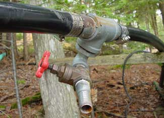

If you pump water seasonally from a river or lake for irrigation or household use, you're faced with what could be a serious and ongoing hassle. Depending on the kind of pump you're using and the length of intake line, priming your system in the usual way - by pouring buckets of water down into the pump and pipe - can be slow, messy and infuriating. But there is a fast and easy alternative, which I’ll explain below.
Water is the only liquid that expands as it freezes, and this is why most seasonal water systems need to be drained before winter. Otherwise pump and pipes will crack under the strain of expanding ice. But when it’s time to get your pump working again as warm weather arrives, you have to refill the whole system with water. This operation is called priming, and it's necessary because water pumps can't move air. All this sounds easy enough in theory, but there are two reasons it's not easy in real life.
First, seasonal water systems are not usually designed for hassle-free priming. You'll typically find a single, half-inch-diameter plug in the top of the water pump - way too small to conveniently pour the 5, 10 or 15 gallons of water required - and you usually need to haul all this by hand in buckets from the water source.
If that wasn't enough, all the air has to get out of the system to make room for the water you're putting in.
The following method has worked flawlessly for more than a decade for me. For less than $30, you can install simple plumbing fittings on the end of your water system intake line, which will make priming a 10-minute project.
The secret behind the system is that it's a lot easier to push water up into the end of an intake line from a lake or river than it is to dribble it down from the top. But to make this bottoms-up arrangement happen, you need to install what I call a priming port.
You won't find anything by this name in hardware stores, but you can assemble one easily using standard plumbing parts. All you need are a tee fitting, some clamps, a 90-degree elbow and a shutoff valve arranged in the way you see in the photo. The priming port is installed near the end of the intake line within a few feet of the foot valve that goes into the lake or river, and prevents water from draining out of the pipe.
To use the system, simply open up the valve that's part of the priming port and undo the vent plug on the top of your water pump (to let air escape as water fills your intake line). Then hook up a hand pump to the priming port and push water all the way up the intake line until it starts coming out of the hole in your water pump. We use a Guzzler hand-operated bilge pump to do this. It's designed for use in small boats but works great in this application. If you have running water available from a garden hose, simply configure your priming port to accept the end of the hose, turn on the water and your system will be primed automatically. When priming is complete, close the valve, remove your pump or hose, put the intake line into the lake or river and switch on the pump. You should be set for the season!
|
 STEVE MAXWELL Adding this simple shutoff valve to the supply is the key to easily priming a water pump. |
|
|